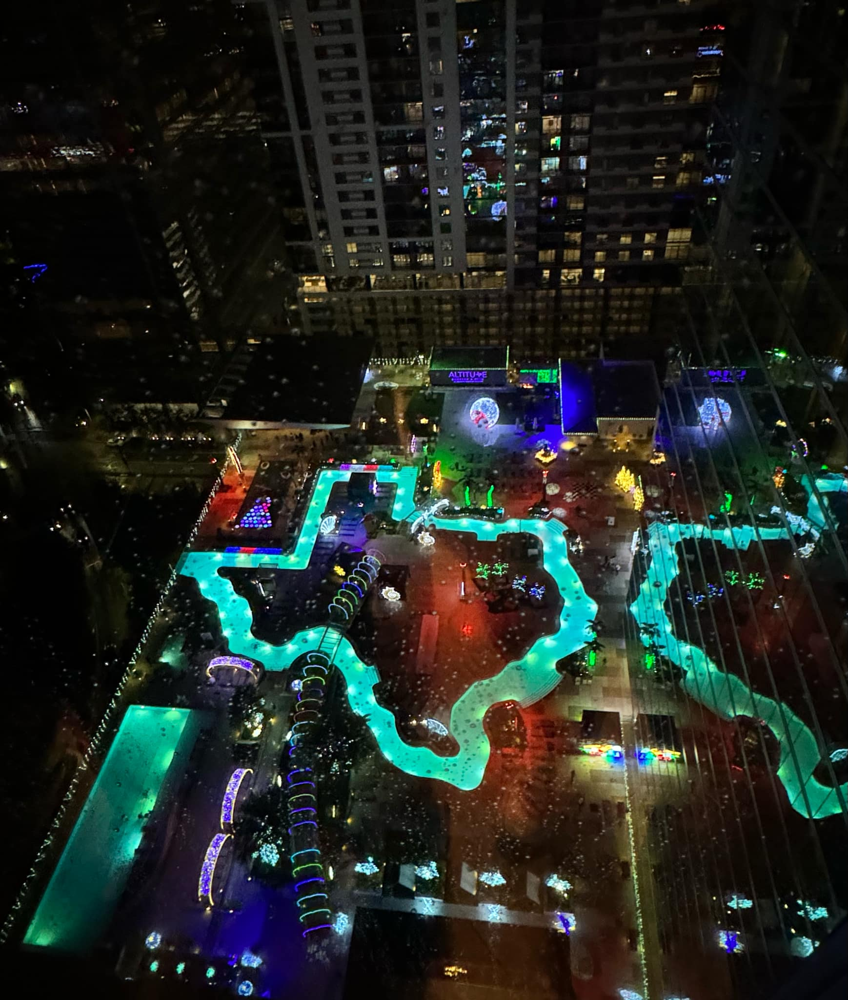
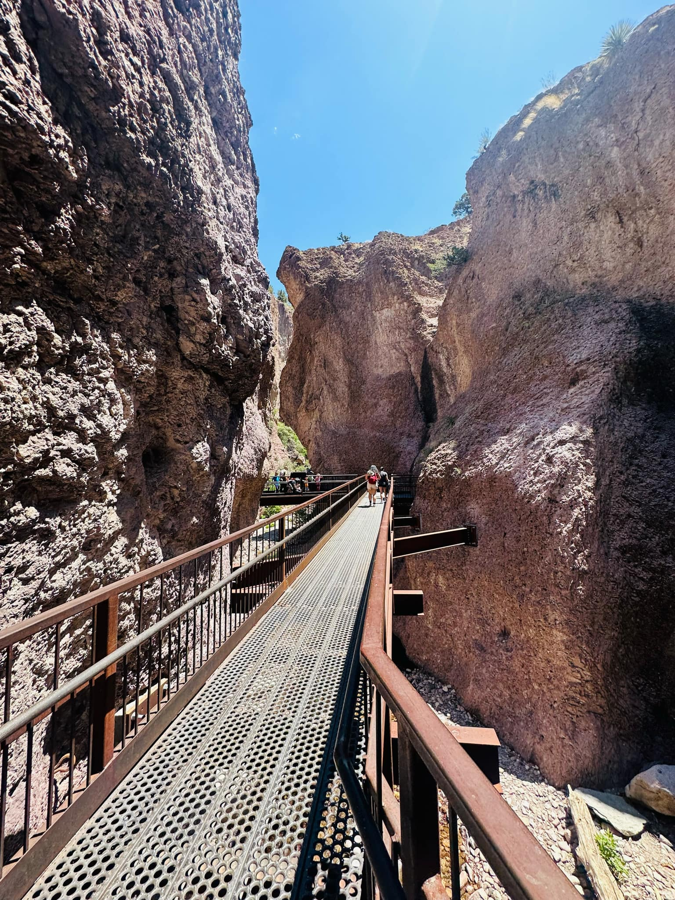
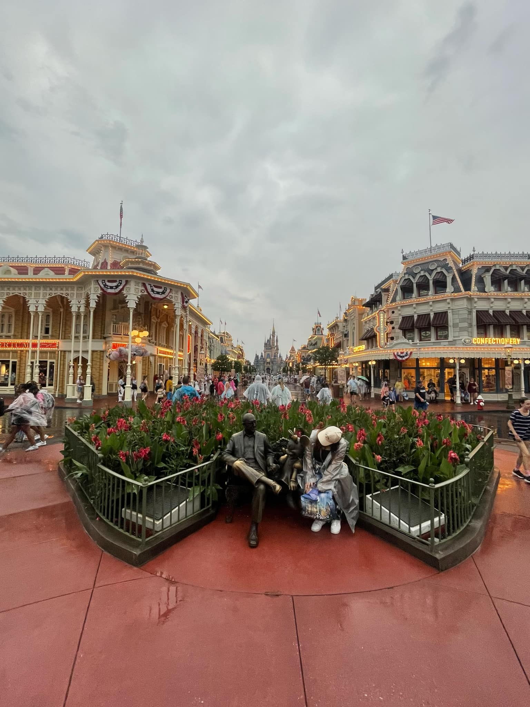
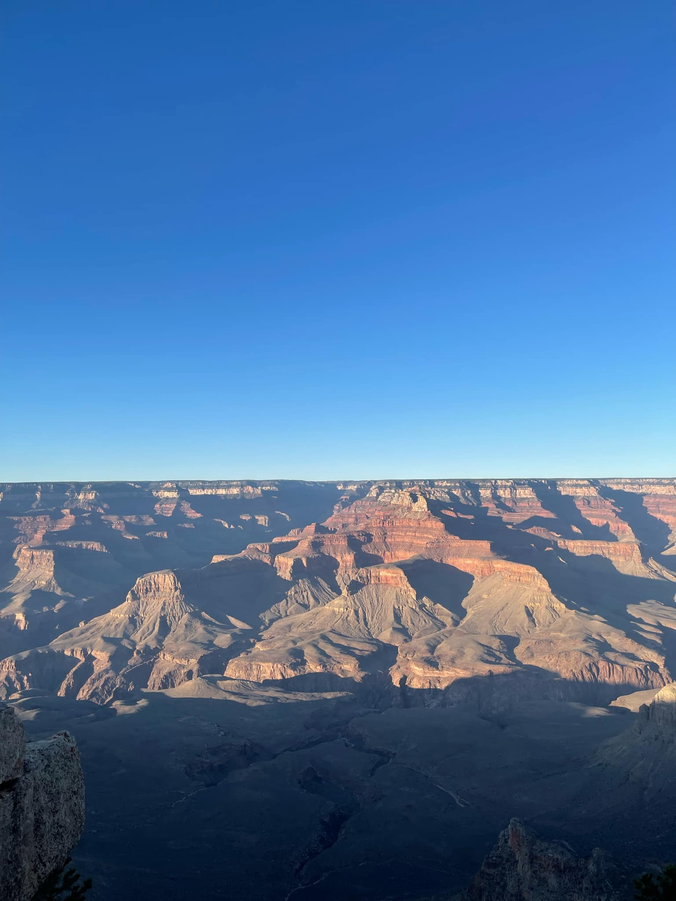
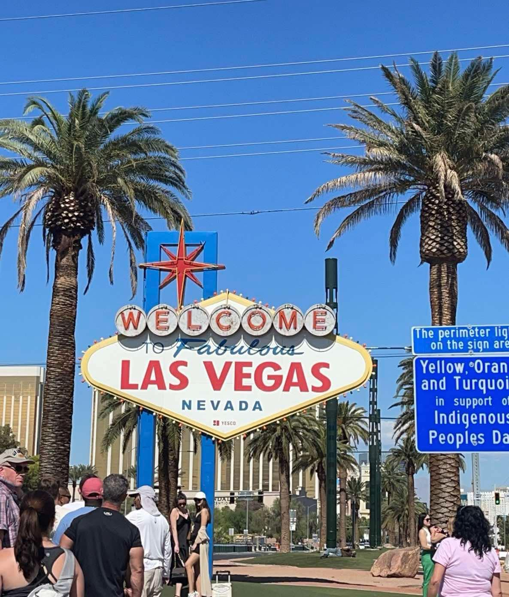

Explore with Me





Traveling as a Hobby
Traveling is one of my greatest hobbies because it lets me indulge my curiosity about the world. Each destination is a new chapter, and every new place holds stories waiting to be discovered. Whether it’s a weekend getaway or an international adventure, I’m always eager to explore new environments, try local foods, or just immerse myself in the atmosphere of the place. For me, traveling is an exciting way to disconnect from the routine, recharge my spirit, and challenge myself in ways that no other hobby can.
While I’ve had the privilege of experiencing so many beautiful places, not all of my travel photos are displayed here. Some memories are better left to the imagination, others are private moments I prefer to keep for myself. But rest assured, each trip holds a special place in my heart, and every photo represents a cherished moment. The stories behind these images are far more meaningful than the pictures themselves, and I look forward to sharing more.
Traveling Philosophy
Travel, for me, is more than just visiting new places—it's about experiencing life from different perspectives. Every journey allows me to step into someone else’s world, see things I’ve never seen before, and embrace new cultures. Travel teaches me not just about the world but also about myself, my limits, and my capacity to adapt and grow. I believe that every trip, whether big or small, brings its own lessons, whether through the people you meet, the landscapes you witness, or the challenges you face. It’s a constant reminder that the world is vast and filled with endless opportunities for learning.